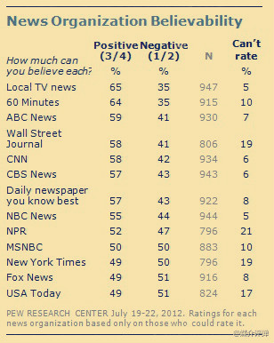

这个年代，有党派立场的新闻频道才会收视率高，而相反又怎么可能公信力高？ //@闾丘露薇: 从电视来说，公信力和收视率成反比呀。@媒介评弹:【美国媒体公信力调查：报界大王《纽约时报》、电视收视之冠FOX新闻跌至谷底】根据皮尤中心对七月美国受众的调查：美国媒体公信力普遍下跌，其中公信力口碑最差媒体包括《纽约时报》、《今日美国》和FOX新闻频道。地方电视台被视为相对最有公信的媒体，CBS老牌新闻杂志《60分钟》紧随其后。 
//@尹鸿:对人民网是否会是重要一天呢？ //@中國時報王銘義: 這個報導對《人民網》也是重要的一天！@人民网:【缅甸取消新闻审查 引起各方关注】缅甸信息部网站星期一发表声明称：“从2012年8月20日起废除针对所有本地出版物的审查制度。” 这条简短的声明却引起了世界上大量媒体的关注。仰光一位记者表示，“对缅甸所有新闻工作者来说，今天是伟大的一天。” 网页链接